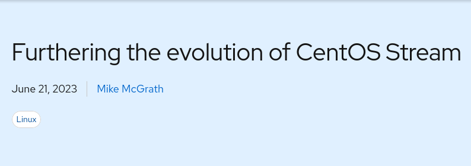
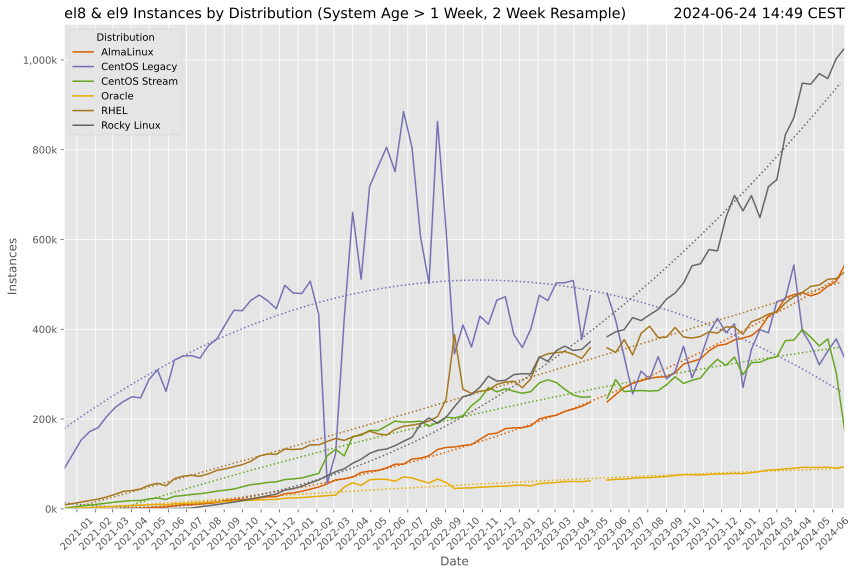
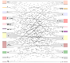
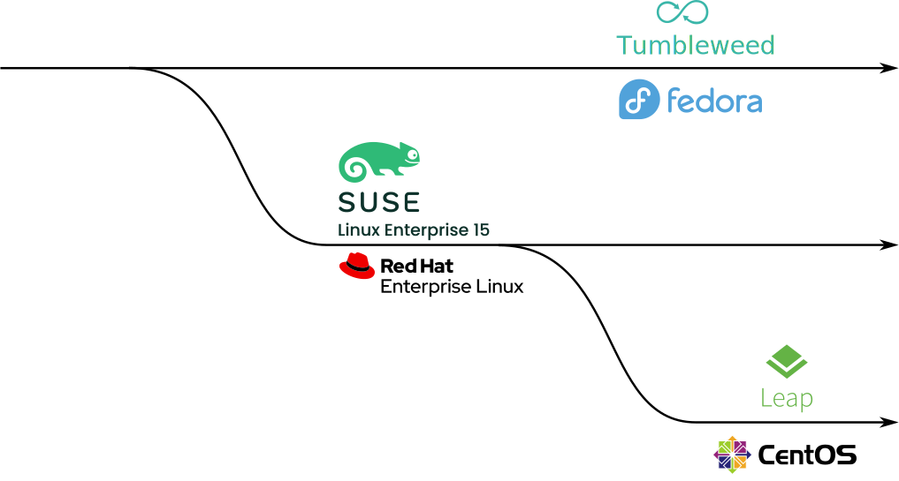
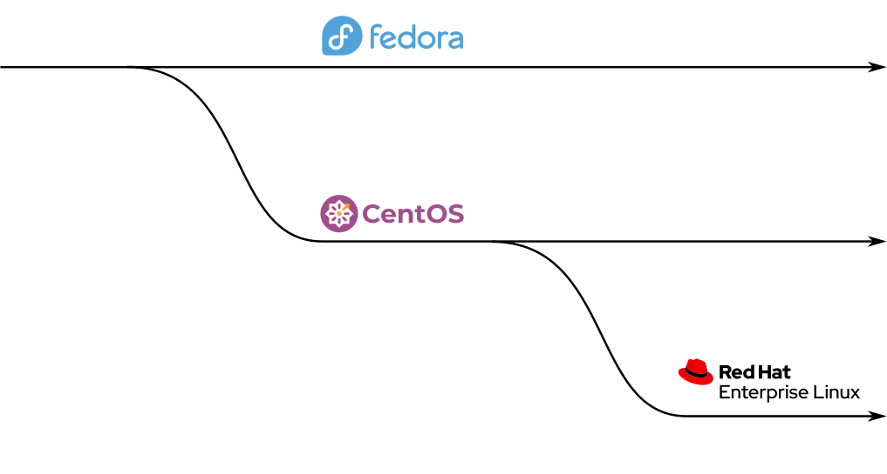
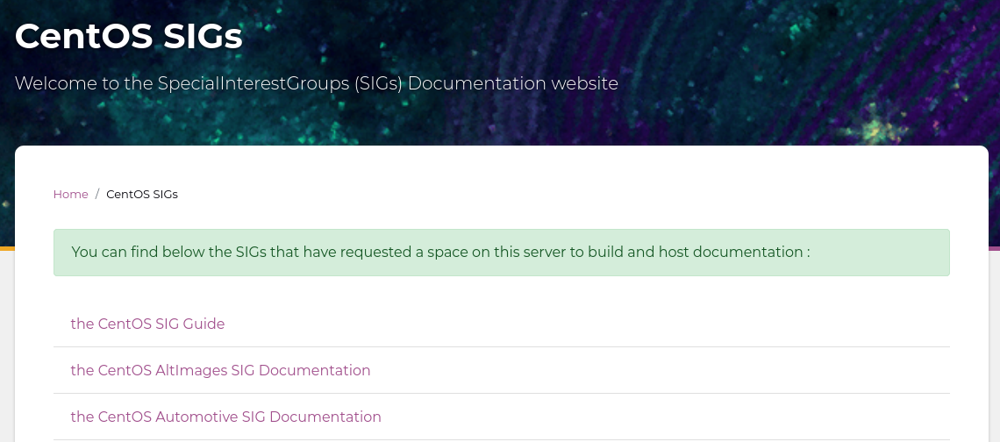
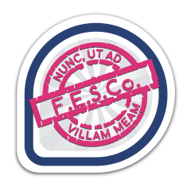

The Tragedy of the Community Enterprise Linux Distribution
who -u
Dan Čermák
| Software Developer @SUSE, SLE BCI releng | |
| i3 SIG, Package maintainer | |
| Developer Tools, Testing and Documentation, Home Automation | |
| https://dancermak.name | |
| dcermak | |
| @Defolos@mastodon.social |
The Tragedy
Tragedy is a genre of drama based on human suffering and,
mainly, the terrible or sorrowful events that
befall a main character.
Traditionally, the intention of tragedy is to invoke an
accompanying catharsis, or a "pain [that] awakens
pleasure,” for the audience.
The Tragedies?

Or this one? 
The Tragedy of Leap
- Binary compatible to SLES now
- no contributor community
Who's successful?

What is success?
- many users?
- many contributors?
- long term survival/sustainability?
Stakeholders
Why do people contribute?

Contribution paths

Community first path

SIGs
- groups empowered to drive (sub-)projects
- path for "externals" to drive innovation

Steering Committee

- decide on high level technical changes
- can support smaller contributors
- can gatekeep
Rebuilding
Documentation
- crucial for everyone
Foundation
- ensure independence of a project
What about Debian?
- predictable release cadence
- technical steering committee
- easy rebuild via debootstrap
- being first helps
TODO Alma
- independent foundation
And Rocky?
- old CentOS 2.0
Catharsis
- Leap is in principle a good thing (for some)
- CentOS stream is in principle a good thing too
- allow for rebuilds outside of OBS (→
pbuild) - stick to a schedule & way
- clear communication
TODO Links
Questions? / Discussion
Answers!